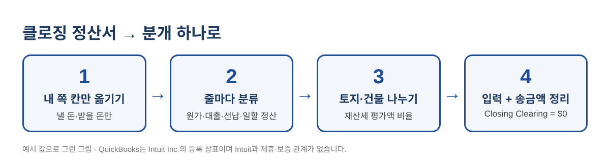
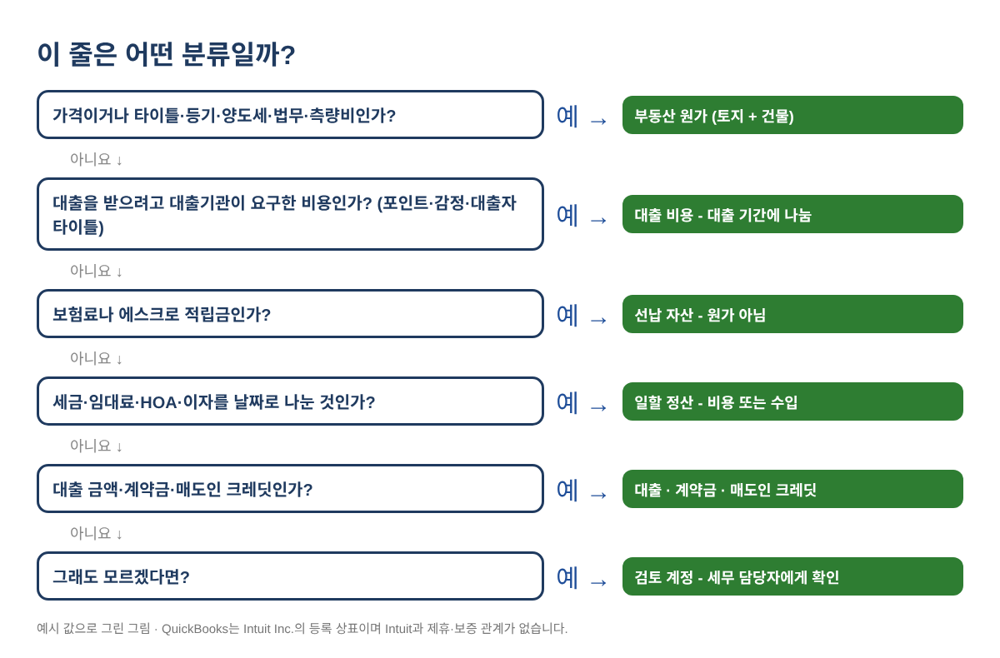
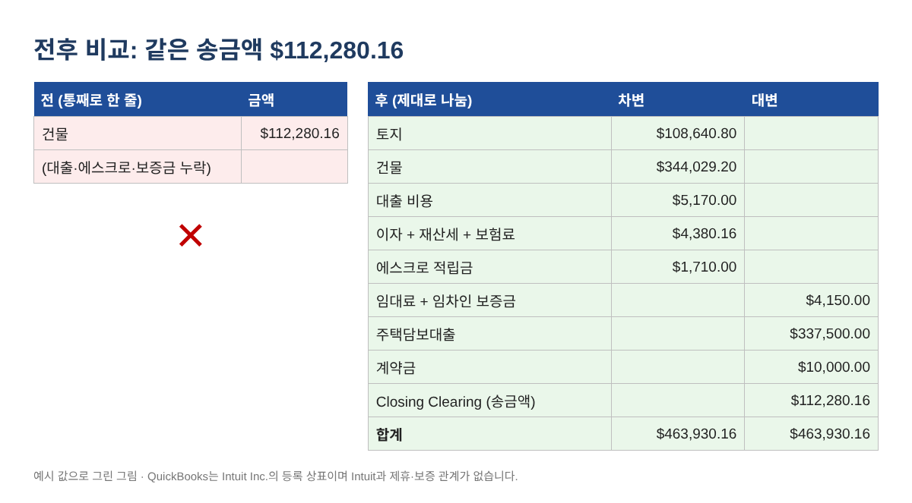

부동산 클로징 정산서, QuickBooks에 어떻게 넣을까? 매입·재융자 분개 따라 하기
가게 건물이나 임대용 부동산을 샀거나 재융자를 하고 나면, 타이틀 회사에서 두세 장짜리 클로징 정산서(Settlement Statement, Closing Disclosure)를 보내 줍니다. 이걸 장부에 넣을 때 송금한 금액을 통째로 '건물' 계정 하나에 넣는 경우가 많은데, 이렇게 하면 재무상태표, 감가상각, 이자, 대출 잔액이 몇 년 동안 계속 틀어집니다.
이 글에서는 QuickBooks 데스크톱이나 온라인에서 간단한 스프레드시트만으로 직접 따라 할 수 있는 방법을 설명합니다. 대출을 받아 산 경우, 현금으로 산 경우, 현금 인출 재융자까지 다룹니다. 글에 나오는 숫자는 모두 가상의 예시입니다.
정산서가 어려운 이유
정산서 한 장에는 성격이 완전히 다른 금액이 섞여 있습니다. 부동산 가격, 부동산 원가에 들어가는 비용, 대출을 받기 위한 비용, 미리 낸 보험료와 에스크로, 그리고 매도인과 날짜로 나눈 재산세·임대료·HOA 관리비입니다. 각각 장부에서 가는 곳이 다릅니다.
- 부동산 원가(토지 + 건물): 가격에 소유자 타이틀 보험, 등기비, 양도세, 법무비, 측량비 같은 정산 비용을 더합니다(IRS Publication 551).
- 대출 비용: 포인트, 대출 수수료, 대출기관이 요구한 감정비·신용조회비는 부동산 원가가 아닙니다(IRS Pub 551). 임대 부동산 대출의 포인트는 보통 대출 기간에 걸쳐 나눠 공제합니다(IRS Pub 527).
- 선납 항목: 보험료와 에스크로 적립금은 쓰일 때까지 자산입니다.
- 일할 정산: 날짜로 나눈 재산세·임대료·HOA는 비용이나 수입 계정으로 갑니다.
- 재무상태표 항목: 새 대출, 미리 낸 계약금(earnest money), 넘겨받은 임차인 보증금.
토지는 감가상각하지 않으므로(IRS Pub 527) 토지와 건물을 어떻게 나누느냐가 앞으로의 감가상각 금액에도 영향을 줍니다.

1단계: 정산서의 내 쪽 칸만 시트에 옮기기
엑셀이나 구글 시트를 열고 설명, 내가 낼 돈(Charge), 내가 받을 돈(Credit), 분류 네 칸을 만듭니다. 매수인(차입자) 칸만 옮기고 매도인 칸은 무시합니다. 마지막의 "Cash due from/to borrower" 합계 줄은 입력하지 마세요. 그 숫자는 나중에 맞춰 볼 기준입니다.
- 낼 돈 합계: =SUM(B2:B40)
- 받을 돈 합계: =SUM(C2:C40)
- 내가 낼 금액: =SUM(B2:B40)-SUM(C2:C40) (음수면 재융자처럼 내가 받는 돈)
이 금액이 은행 명세서의 송금액과 같아야 합니다. 다르면 빠진 줄, 칸을 잘못 넣은 줄, 실수로 입력한 합계 줄이 있는지 보세요.
2단계: 줄마다 분류 붙이기
분류 이름을 짧게 정해 두면 수식으로 쉽게 더할 수 있습니다. 자주 나오는 문구는 아래 표와 같습니다.
| 정산서 문구 | 분류 | 들어갈 곳 |
|---|---|---|
| Contract sales price (계약 가격) | 매입 가격 | 토지 + 건물 |
| 소유자 타이틀 보험, 등기비, 양도세, 변호사비, 측량비 | 부동산 원가 가산 | 토지 + 건물 |
| 매도인 체납 세금을 대신 냄 | 부동산 원가 가산 | 토지 + 건물 (Pub 551) |
| Seller credit / 수리비 크레딧 | 매도인 크레딧 | 부동산 원가에서 차감 |
| 포인트, 대출 수수료, 대출용 감정비·신용조회비, 대출자 타이틀 보험 | 대출 비용 | Loan Costs (기타 자산) |
| Prepaid interest (일할 선납 이자) | 이자 | 이자 비용 |
| 화재·재산 보험료 | 선납 보험료 | Prepaid Insurance |
| Initial escrow deposit (에스크로 적립) | 대출 에스크로 적립 | Escrow Deposits (자산) |
| 매도인이 미리 낸 재산세 / 매도인 몫 미납 재산세 | 재산세 일할 정산 | 재산세 비용 |
| 임대료 일할 정산 / 넘겨받은 보증금 | 임대료 정산 / 임차인 보증금 | 임대 수입 / 보증금 부채 |
| 대출 금액 / 계약금 / 기존 대출 상환 | 신규 대출 / 계약금 / 기존 대출 상환 | 대출 부채 / 계약금 자산 / 기존 대출 부채 |
재산세는 헷갈리기 쉽습니다. 매도인이 이미 낸 세금 중 내 기간 몫을 매도인에게 돌려주면 보통 내 세금 비용이지 원가가 아닙니다. 반대로 매도인이 내야 할 세금을 내가 대신 내고 돌려받지 않으면 원가(basis)에 들어갑니다(IRS Pub 551). 홈 워런티, 인스펙션, HOA 자본 분담금처럼 애매한 줄은 'Closing Items to Review(검토 항목)' 계정에 두었다가 세무 담당자와 정하면 됩니다.

3단계: 분류별로 더하고 토지·건물 나누기
D열에 분류를 적었다면, 분류마다 수식 하나로 순액(낼 돈 − 받을 돈)이 나옵니다.
- =SUMIFS(B:B,D:D,"대출 비용")-SUMIFS(C:C,D:D,"대출 비용")
- 부동산 원가: '매입 가격' + '부동산 원가 가산' + '매도인 크레딧'에 같은 수식을 씁니다.
- 토지 비율: =토지평가액/(토지평가액+건물평가액) — 재산세 고지서의 Land와 Improvement 금액을 씁니다. 시가가 불분명하면 재산세 평가액 비율을 쓸 수 있습니다(IRS Pub 527).
- 토지: =ROUND(부동산원가*토지비율,2), 건물: =부동산원가-토지 (둘의 합이 1센트까지 맞도록).
예를 들어 $450,000짜리 듀플렉스를 $337,500 대출로 사고, 원가 가산 비용 $5,170, 매도인 수리 크레딧 $2,500, 재산세 평가액이 토지 $96,000·건물 $304,000이라면 분개는 이렇게 됩니다.
| 계정 (예시) | 차변 | 대변 |
|---|---|---|
| 토지 (24%) | 108,640.80 | |
| 건물 | 344,029.20 | |
| 대출 비용 | 5,170.00 | |
| 이자 비용 | 936.16 | |
| 재산세 비용 | 1,284.00 | |
| 선납 보험료 | 2,160.00 | |
| 에스크로 적립금 | 1,710.00 | |
| 임대 수입 (일할 임대료) | 1,150.00 | |
| 임차인 보증금 | 3,000.00 | |
| 주택담보대출 | 337,500.00 | |
| 계약금 | 10,000.00 | |
| Closing Clearing (송금액) | 112,280.16 | |
| 합계 | 463,930.16 | 463,930.16 |

4단계: 분개 하나로 입력하고 송금액 정리하기
먼저 필요한 계정을 만듭니다. 토지·건물은 고정자산, 대출 비용·에스크로·선납 보험료·계약금·Closing Clearing은 기타 자산, 대출은 장기 부채, 임차인 보증금은 유동 부채입니다.
QuickBooks 데스크톱
- Lists > Chart of Accounts > Account > New에서 없는 계정을 추가합니다.
- Company > Make General Journal Entries. 날짜는 클로징 날짜, 번호는 CLOSE-2026-01처럼 붙입니다.
- 표의 줄을 하나씩 입력하고 차변과 대변이 같은지 확인한 뒤 Save & Close.
- 송금 자체(Write Checks, Make Deposits 또는 Bank Feeds)는 Closing Clearing 계정으로 기록합니다.
QuickBooks 온라인
온라인을 처음 쓰시는 분은 메뉴 위치가 데스크톱과 다르니 아래 순서대로 따라 하세요(2026년 8월 업데이트된 Intuit 도움말 기준).
- 왼쪽 메뉴 All apps(모든 앱) > Accounting(회계) > Chart of accounts(계정과목표) > New. 토지·건물은 Account type을 Fixed Assets로, 나머지는 Other Assets나 알맞은 자산·부채 유형으로 고릅니다.
- 화면 위쪽 + Create를 누르고 Journal entry를 고릅니다. Journal date를 클로징 날짜로 바꿉니다.
- 줄마다 Account를 고르고 금액을 Debits 또는 Credits에 넣습니다. 합계가 같은지 확인하고 Save and close.
- All apps > Accounting > Bank transactions에서 은행에서 내려받은 송금 거래를 찾아 분류(Category)를 Closing Clearing으로 바꾸고 Add(또는 Post)를 누릅니다.
왜 정리 계정을 쓸까요? 송금액은 은행 피드로도 들어옵니다. 분개에서 은행 계정을 바로 쓰고 은행 피드 거래까지 추가하면 현금이 두 번 잡힙니다. 정리 계정을 쓰면 분개는 Closing Clearing 대변, 은행 거래는 Closing Clearing 차변이 되어 잔액이 $0.00으로 끝납니다. 재무상태표로 확인하세요.
재융자일 때: 부동산 원가는 없습니다. 새 대출은 대변, 기존 대출 원금은 기존 대출 계정 차변, 상환 이자는 이자, 대출 수수료는 대출 비용, 내가 받은 현금은 Closing Clearing 차변입니다. 예: 새 대출 $360,000으로 원금 $330,812.20을 갚고 비용을 빼면 $22,649.55를 받게 됩니다.
자주 하는 실수
- 송금액 전체를 '건물'에 넣어서 대출이 장부에 없음
- 포인트와 대출 수수료를 건물 원가에 포함
- 몇 주 전에 낸 계약금을 잊음 — 계약금 자산에서 정리해야 하고, 비용으로 넣었다면 먼저 자산으로 옮겨야 함
- 토지까지 감가상각하거나 토지·건물을 아예 나누지 않음
- 일할 임대료와 보증금을 빠뜨려서 첫 임대료가 수입으로 부풀려짐
- 'Cash due' 합계 줄을 한 줄로 입력해 금액이 두 배가 됨
자주 묻는 질문
소유자 타이틀 보험은 비용인가요?
아닙니다. IRS Pub 551은 소유자 타이틀 보험을 부동산 원가(basis)에 포함하는 정산 비용으로 듭니다. 대출자용 타이틀 보험은 대출 비용입니다.
토지·건물 비율을 계약서 금액으로 정해도 되나요?
비율은 시가(FMV)를 따라야 하고, 시가가 불분명하면 재산세 평가액 비율을 쓸 수 있습니다(IRS Pub 527). 감정평가서가 있으면 근거가 될 수 있으니 세무 담당자와 상의하세요.
대출 비용은 어떻게 나누나요?
장부에서는 대출 비용을 대출 개월 수로 나눠 매월 분개하는 방법이 간단합니다(예: $5,170 ÷ 360 = 월 $14.36, 차변 상각비 / 대변 대출 비용). 포인트는 별도 규정이 있어 세금 신고에서는 다른 방법을 쓸 수 있습니다.
송금액과 정산서가 안 맞아요.
빠진 줄, 칸이 바뀐 금액, 매도인 칸에서 옮긴 줄, 두 계좌에서 나눠 보낸 송금이 있는지 보세요. 은행 줄이 여러 개여도 모두 Closing Clearing으로 분류하면 잔액은 $0.00이 됩니다.
체크리스트
- ☐ 정산서의 내 쪽 칸만 옮겼고 합계 줄은 입력하지 않음
- ☐ 내가 낼 금액 = 은행 명세서 송금액
- ☐ 토지·건물을 재산세 평가액(또는 시가) 비율로 나눔
- ☐ 대출 비용·선납 보험료·에스크로를 부동산 원가와 분리
- ☐ 분개 날짜 = 클로징 날짜, 차변 = 대변
- ☐ 계약금과 Closing Clearing 잔액이 모두 $0.00
- ☐ 세무 담당자에게 건물 원가와 사용 개시일 전달
- ☐ 정산서 PDF를 분개와 함께 보관
위 과정을 그대로 해 주는 부동산 클로징 정산서 → 분개 만들기 2026은 아래 무료 키트 다운로드에서 가입 없이 무료로 받으실 수 있습니다(엑셀 + PDF 가이드).
안내: 이 글은 교육용 정보이며 세무·법률·회계 자문이 아닙니다. 상황에 따라 처리가 달라질 수 있으니 세무 담당자와 확인하세요. 숫자는 모두 가상의 예시입니다. QuickBooks는 Intuit Inc.의 등록 상표이며, 이 글은 Intuit과 제휴·보증 관계가 없습니다(QuickBooks is a registered trademark of Intuit Inc.; not affiliated with or endorsed by Intuit.).
출처
- IRS Publication 551 (2025년 12월 개정), Basis of Assets
- IRS Publication 527 (2025), Residential Rental Property
- Intuit: QuickBooks Online 분개 만들기
- Intuit: QuickBooks Online 자산 계정 만들기
- Intuit: QuickBooks Online 은행 거래 분류
무료 키트 다운로드
글에서 설명한 내용을 그대로 따라 할 수 있는 도구입니다. 가입 없이 바로 받으세요.
- 단계별 가이드 (PDF)Closing_Statement_Guide_Checklist_2026_EN_KR.pdf · 359 KB
- Excel 계산 도구 (.xlsx)Closing_Statement_JE_Builder_2026_EN_KR.xlsx · 33 KB
본인과 본인 사업에 무료로 쓰세요. 재판매·재배포는 하지 마세요. 일반 정보이며 세무·법률·회계 자문이 아닙니다. 숫자는 본인 자료로 꼭 확인하세요. QuickBooks는 Intuit Inc.의 상표이며 BIZLEX는 Intuit과 관련이 없습니다.